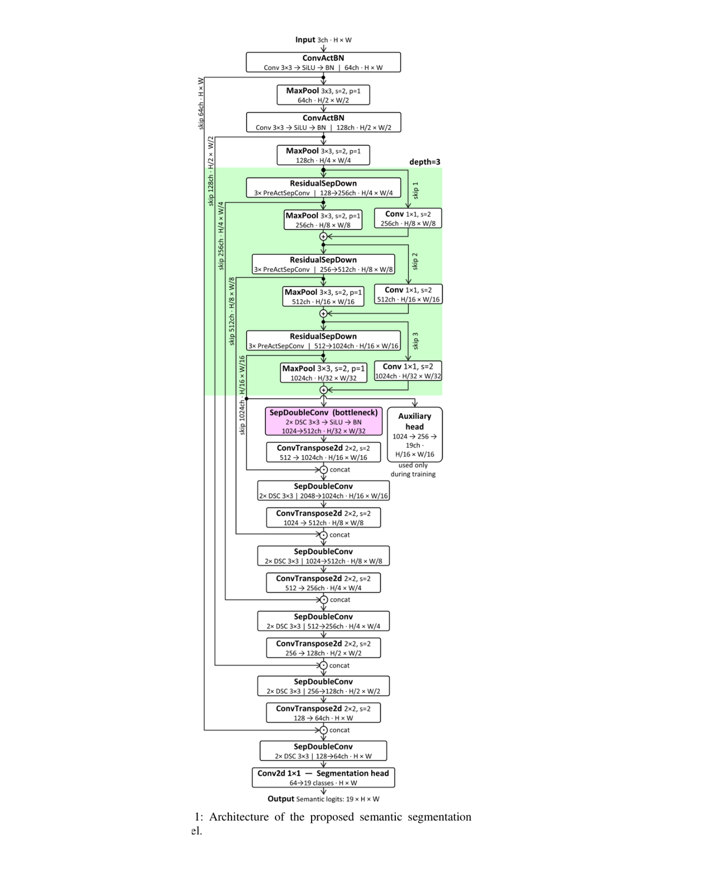
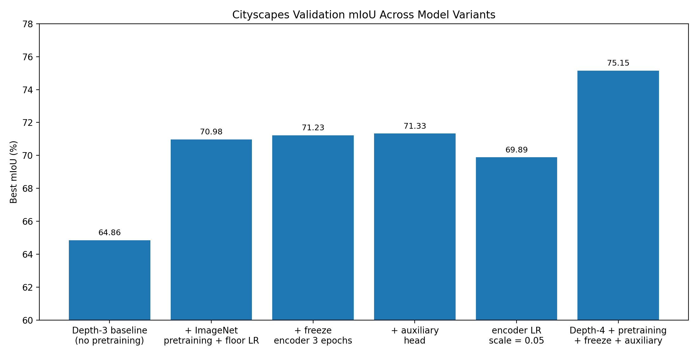
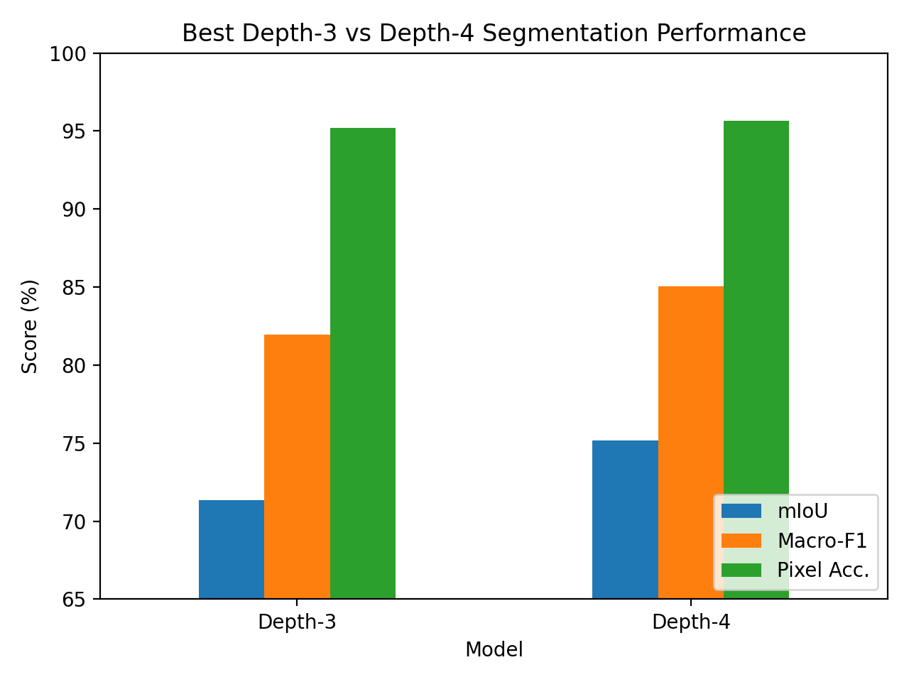
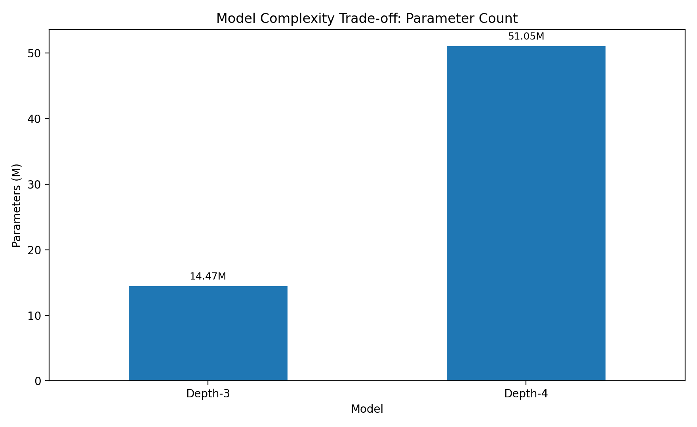
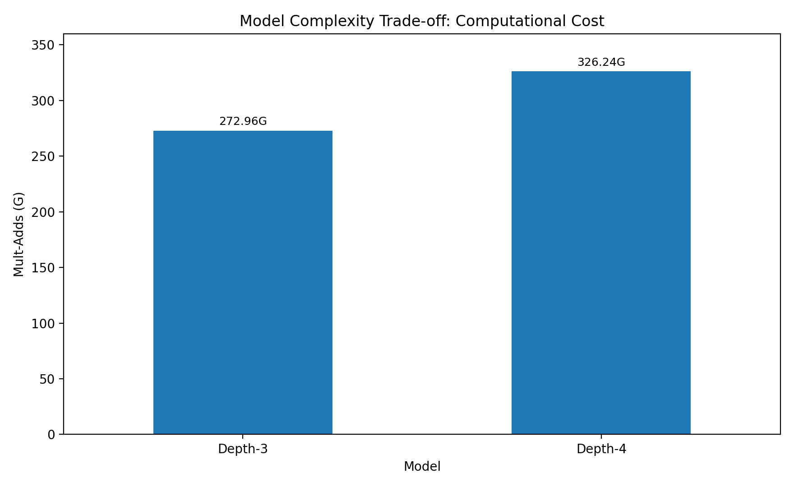
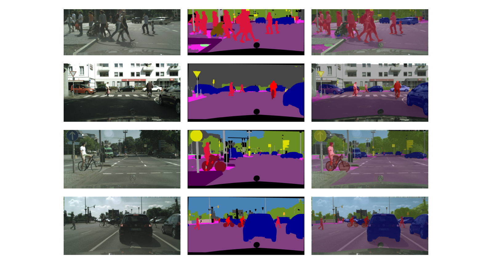

City mobility teams
Need automated understanding of roads, vehicles, pedestrians, and traffic-relevant scene elements.
Product case study
A computer vision product case study based on an in-press research paper on compact semantic segmentation for urban street scenes. The product translates pixel-level scene understanding into practical smart city capabilities for traffic analysis, infrastructure monitoring, intelligent mobility, and urban digital services.
Overview
This case study translates an in-press research paper on semantic segmentation of urban street scenes into a product-oriented smart city concept. The research proposes a compact custom encoder-decoder architecture designed to balance segmentation quality and computational efficiency.
The product concept focuses on turning pixel-level segmentation outputs into decision-support capabilities for city operators, mobility platforms, infrastructure teams, and urban analytics systems.
My role
My contribution includes translating the semantic segmentation research into a product case study with a clear problem, target users, MVP scope, roadmap, AI risks, evaluation metrics, and deployment-oriented trade-offs.
The product framing focuses on what the model enables in practice: dense urban scene understanding, automated monitoring, visual evidence, and operational support for smart city systems.
Problem
Smart city systems increasingly depend on cameras and digital perception modules to understand streets, intersections, sidewalks, mobility flows, and infrastructure conditions. Raw images are not enough: the system must understand which pixels correspond to roads, vehicles, pedestrians, buildings, vegetation, traffic signs, and other urban classes.
Many strong segmentation models are too large or too expensive for continuous deployment in practical urban environments. For a real smart city product, accuracy must be balanced with computational cost, scalability, maintainability, and deployment feasibility.
This creates a product opportunity for a compact segmentation module that can support urban scene understanding while remaining realistic for deployment in monitoring pipelines and intelligent mobility systems.
Users
Need automated understanding of roads, vehicles, pedestrians, and traffic-relevant scene elements.
Need visual evidence and spatial maps for sidewalks, roads, buildings, vegetation, and urban assets.
Need deployable AI modules that can be integrated into existing urban analytics platforms.
Need reproducible benchmarks, model comparisons, and architecture-performance trade-off analysis.
Personas
These personas keep the product focused on operational urban decisions rather than model scores alone.
Needs reliable visual summaries from street cameras to monitor mobility, infrastructure, and urban activity.
Needs a segmentation module that can be evaluated, integrated, monitored, and optimized for deployment.
Vision
The product vision is to provide a semantic segmentation layer that converts street images into structured, pixel-level urban understanding. This layer can support traffic analysis, infrastructure monitoring, digital urban twins, road-scene analytics, and intelligent mobility services.
The platform should expose segmentation outputs, confidence information, visual overlays, and operational metrics in a way that supports human decision-making and system integration.
User journey
The user journey connects image ingestion, segmentation, visualization, review, and integration into smart city workflows.
The system receives an image or video frame from a street camera or dataset.
The model assigns semantic labels to each pixel in the urban image.
The product displays color-coded segmentation maps and overlays.
The system derives class-level indicators such as road, vehicle, pedestrian, and sidewalk coverage.
Operators or engineers review outputs, errors, and confidence-related signals.
Segmentation outputs feed dashboards, reports, or downstream smart city applications.
Core capabilities
Product role: assigns semantic labels to every pixel in an urban scene.
User value: dense visual understanding for city-scale monitoring.
Product role: extracts information about roads, sidewalks, vehicles, pedestrians, buildings, and vegetation.
User value: converts segmentation output into operational indicators.
Product role: provides overlays and segmentation maps for human review.
User value: improves interpretability and trust.
Product role: tracks model quality, drift, speed, and resource usage.
User value: supports reliable smart city operation.
Extended capabilities
The research model can evolve into a product service that supports real-time monitoring, edge deployment, and integration with urban systems.
Use segmentation outputs to support vehicle, road, sidewalk, and pedestrian analysis in urban mobility workflows.
Convert street-scene perception into structured layers that can feed dashboards, reports, or digital twin interfaces.
Explore compression, quantization, pruning, and runtime profiling to make the model more suitable for field deployment.
Research foundation
The research proposes a custom encoder-decoder architecture with skip connections, depthwise separable convolutions, residual downsampling blocks, a compact bottleneck, and an auxiliary training head.
The custom encoder was first pretrained on ImageNet and then fine-tuned on the Cityscapes dataset. The study compared multiple training and architecture variants, including pretraining, bounded learning-rate scheduling, temporary encoder freezing, auxiliary supervision, and deeper encoder configurations.
The best configuration achieved 75.15% mIoU, 85.06% macro-F1, and 95.66% pixel accuracy on the Cityscapes validation split.
MVP
The MVP focuses on validating whether users can upload or process an urban street image, generate a segmentation map, interpret the visual output, and use class-level results in a smart city monitoring workflow.
Prioritization
| Feature | Priority | Reason |
|---|---|---|
| Image/frame ingestion | Must | Required input for the product. |
| Semantic segmentation inference | Must | Core product value. |
| Segmentation overlay | Must | Makes output understandable to users. |
| Class-level summary | Must | Turns pixel labels into operational information. |
| Model quality metrics | Should | Supports monitoring and trust. |
| Exportable reports | Should | Useful for review and communication. |
| Edge-device profiling | Could | Important later for deployment, but not required in MVP. |
| GIS / digital twin integration | Could | Valuable extension after the core segmentation workflow is validated. |
| Automated enforcement decisions | Won’t for now | High ethical and regulatory risk. |
Roadmap
Image ingestion, segmentation inference, overlay visualization, and class-level summaries.
mIoU, macro-F1, pixel accuracy, class-wise diagnostics, and visual error review.
Urban indicators, dashboard views, trend summaries, and review workflows.
Runtime profiling, memory analysis, pruning, quantization, and edge-device testing.
GIS, digital twins, mobility platforms, multi-camera pipelines, and governance controls.
Metrics
Completed analyses, user review rate, report exports, time to insight, dashboard adoption, operator trust score.
mIoU, macro-F1, pixel accuracy, per-class IoU, class-wise error patterns, ignored-region handling.
Parameter count, mult-adds, inference time, memory footprint, deployment feasibility on target hardware.
Performance drop across conditions, critical-class errors, drift, false visual confidence, operator override rate.
The best model improves segmentation quality, but it also increases complexity. The product decision is therefore not simply “choose the highest score,” but select the architecture that provides the right balance for the deployment context.
Evidence
The evidence shows how pretraining, controlled fine-tuning, auxiliary supervision, and encoder depth affect segmentation quality and complexity. The key product message is the trade-off between stronger urban understanding and deployment cost.






Risk management
| Risk | Product impact | Mitigation |
|---|---|---|
| Misclassification of critical classes | Pedestrians, vehicles, or road areas may be segmented incorrectly. | Class-wise thresholds, human review, critical-class monitoring. |
| Overtrust in visual overlays | Users may assume a segmentation map is fully correct. | Uncertainty communication, quality indicators, error examples. |
| Dataset bias | Model may perform worse in cities, weather, or camera conditions not represented in training. | External validation, domain adaptation, continuous evaluation. |
| Deployment complexity | The strongest model may be too heavy for some real-time or edge scenarios. | Compression, pruning, quantization, profiling, and model-tier selection. |
| Privacy and governance | Street images may contain people, vehicles, or sensitive urban data. | Privacy-by-design, anonymization, retention limits, governance review. |
| Operational misuse | Outputs could be used for automated decisions without human oversight. | Decision-support framing and clear limits on automated action. |
Related publication
This case study is connected to an in-press research paper on compact semantic segmentation for smart city applications.
In press
Research paper on a compact custom encoder-decoder architecture for Cityscapes semantic segmentation, ImageNet pretraining, controlled fine-tuning, auxiliary supervision, and depth-performance trade-offs.
Learnings
This case study shows that AI product value in smart city perception depends on more than a single benchmark score. The product must balance segmentation quality, model complexity, deployment cost, privacy, reliability, and interpretability.
The most important product trade-off is between stronger segmentation performance and operational feasibility. The depth-4 model produces the strongest result, but it is also more complex. In a product setting, the best choice depends on whether the target deployment prioritizes accuracy, speed, hardware cost, or scalability.
Another important lesson is that pretraining and controlled transfer learning are not just technical refinements. They directly affect product reliability because they improve the model’s ability to understand complex urban scenes.